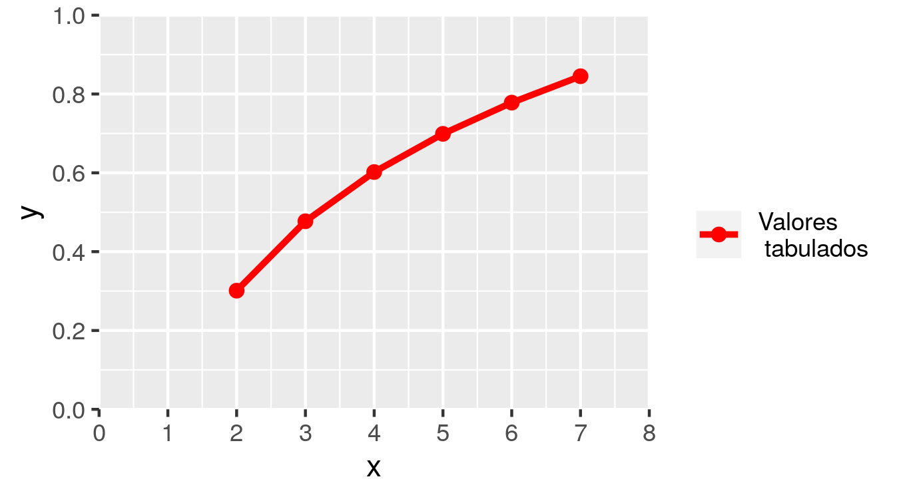
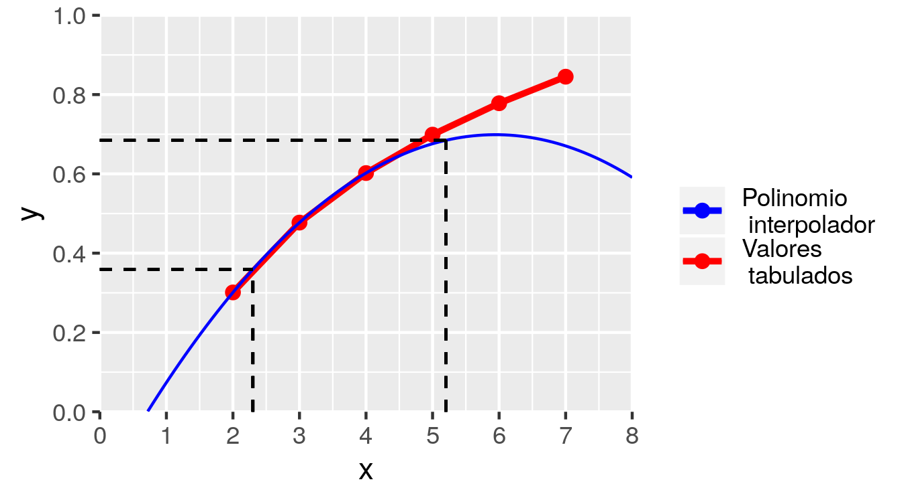
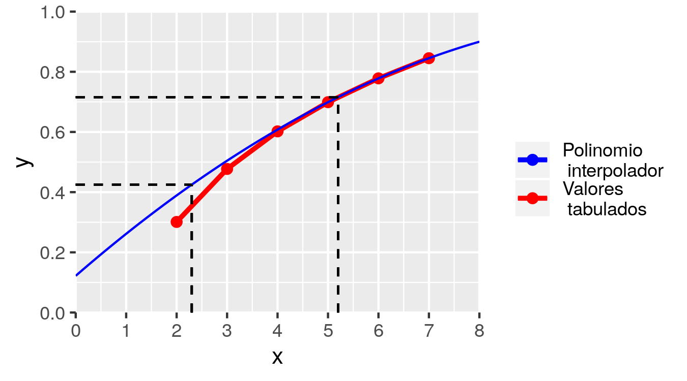
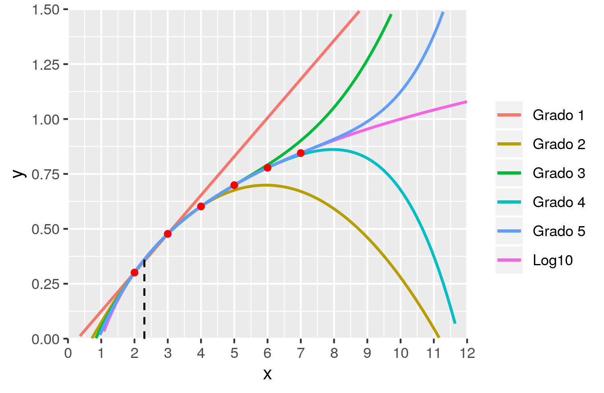
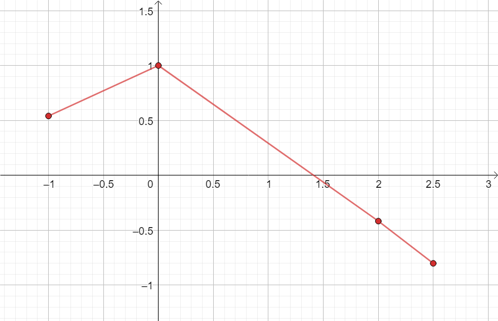
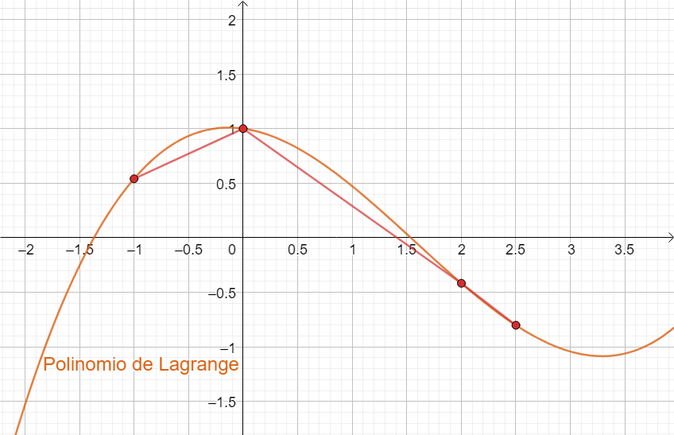
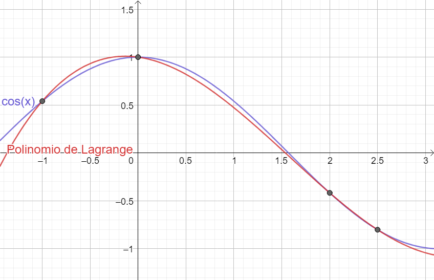
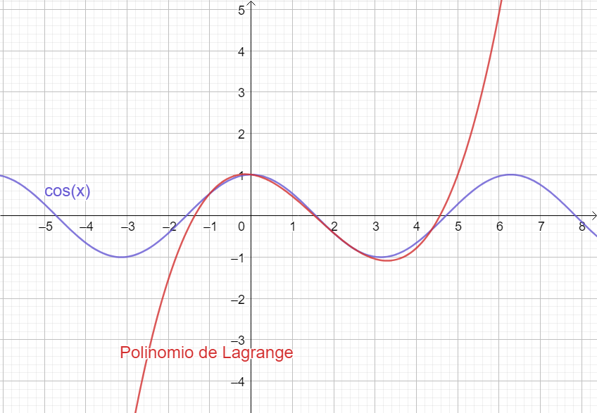
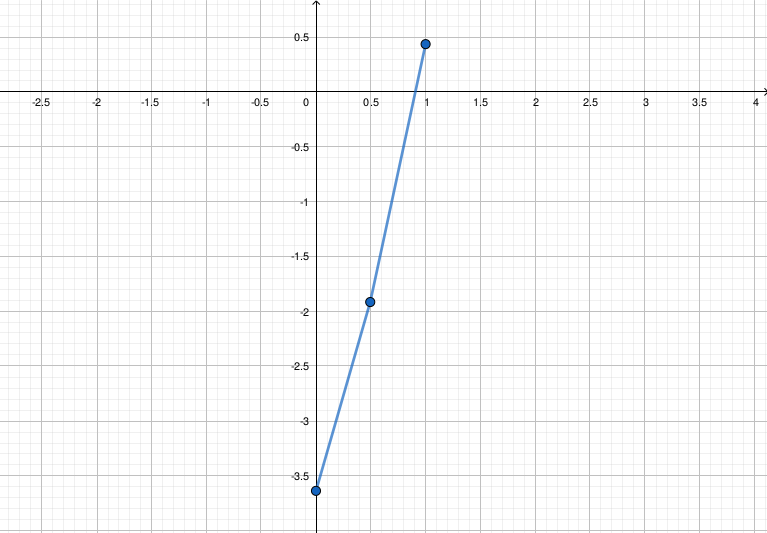

4 Aproximación Polinomial: interpolación y extrapolación
4.1 Generalidades
- En matemática estudiamos funciones de la forma \(y = f(x)\), donde se conoce la expresión matemática que define a \(f(x)\), para determinar sus derivadas y calcular integrales definidas.
Sin embargo, muchas veces en aplicaciones prácticas se requiere trabajar con funciones cuya derivación e integración presenta dificultades porque:
- no son funciones elementales (polinomios, expresiones racionales, funciones trigonométricas, exponenciales o comibnaciones sencillas de estas);
- directamente se desconoce su expresión analítica (ejemplo: datos obtenidos experimentalmente).
En estos casos, se suele contar con una tabla de valores compuestas por puntos \((x_i, y_i)\) a partir de la cual se desea:
- aproximar \(f(x)\) en abscisas que no están tabuladas (valores de \(x\) no dados), es decir, interpolar
- integrar \(f(x)\) en un intervalo determinado
- derivar \(f(x)\)
En esta unidad estudiaremos métodos numéricos que cumplen con estos objetivos que consisten en sustituir la función complicada o que está determinada tabularmente, por una función polinomial que se aproxime a los puntos disponibles.
4.2 Diferencias finitas
- Antes de ver el primer método veremos cómo crear una tabla de diferencia que utilizaremos más adelante.
- Se tiene una función \(y = f(x)\) definida en forma tabular con saltos equiespaciados en \(x\):
| \(x_k\) | \(y_k = f(x_k)\) |
|---|---|
| \(x_0\) | \(y_0\) |
| \(x_1 = x_0 + h\) | \(y_1\) |
| \(x_2 = x_0 + 2 h\) | \(y_2\) |
| \(\vdots\) | \(\vdots\) |
| \(x_{n-1} = x_0 + (n-1) h\) | \(y_{n-1}\) |
| \(x_{n} = x_0 + n h\) | \(y_n\) |
| \(\Delta y_k = y_{k+1} - y_k\) | \(\Delta^2 y_k = \Delta y_{k+1} - \Delta y_k\) | \(\Delta^3 y_k = \Delta^2 y_{k+1} - \Delta^2 y_k\) | \(\cdots\) |
|---|---|---|---|
| \(\Delta y_0 = y_1 - y_0\) | \(\Delta^2 y_0 = \Delta y_{1} - \Delta y_0\) | \(\Delta^3 y_0 = \Delta^2 y_{1} - \Delta^2 y_0\) | \(\cdots\) |
| \(\Delta y_1 = y_2 - y_1\) | \(\Delta^2 y_1 = \Delta y_{2} - \Delta y_1\) | \(\Delta^3 y_1 = \Delta^2 y_{2} - \Delta^2 y_1\) | \(\cdots\) |
| \(\Delta y_2 = y_3 - y_2\) | \(\Delta^2 y_2 = \Delta y_{3} - \Delta y_2\) | \(\Delta^3 y_2 = \Delta^2 y_{3} - \Delta^2 y_2\) | \(\cdots\) |
| \(\vdots\) | \(\vdots\) | \(\vdots\) | \(\ddots\) |
| \(\Delta y_{n-1} = y_{n} - y_{n-1}\) | - | - | \(\cdots\) |
| - | - | - | \(\cdots\) |
| \(\cdots\) | \(\Delta^{n-1} y_k = \Delta^{n-2} y_{k+1} - \Delta^{n-2} y_k\) | \(\Delta^{n} y_k = \Delta^{n-1} y_{k+1} - \Delta^{n-1} y_k\) |
|---|---|---|
| \(\cdots\) | \(\Delta^{n-1} y_0 = \Delta^{n-2} y_{1} - \Delta^{n-2} y_0\) | \(\Delta^{n} y_0 = \Delta^{n-1} y_{1} - \Delta^{n-1} y_0\) |
| \(\cdots\) | \(\Delta^{n-1} y_1 = \Delta^{n-2} y_{0} - \Delta^{n-2} y_1\) | - |
| \(\cdots\) | - | - |
| \(\ddots\) | \(\vdots\) | \(\vdots\) |
| \(\cdots\) | - | - |
| \(\cdots\) | - | - |
Ejemplo 1. Siendo \(y=f(x)\) una función desconocida de la cual se tienen los valores tabulados \((x_k, y_k)\) que se presentan a continuación, junto con una representación gráfica de los mismos:
| \(k\) | \(x_k\) | \(y_k\) |
|---|---|---|
| 0 | 2 | 0,3010 |
| 1 | 3 | 0,4771 |
| 2 | 4 | 0,6021 |
| 3 | 5 | 0,6990 |
| 4 | 6 | 0,7781 |
| 5 | 7 | 0,8451 |

- La correspondiente tabla de diferencias finitas es:
| \(k\) | \(x_k\) | \(y_k\) | \(\Delta y_k\) | \(\Delta^2 y_k\) | \(\Delta^3 y_k\) | \(\Delta^4 y_k\) | \(\Delta^5 y_k\) |
|---|---|---|---|---|---|---|---|
| 0 | 2 | 0,3010 | 0,1761 | -0,0511 | 0,0230 | -0,0127 | 0,0081 |
| 1 | 3 | 0,4771 | 0,1250 | -0,0281 | 0,0103 | -0,0046 | - |
| 2 | 4 | 0,6021 | 0,0969 | -0,0178 | 0,0057 | - | - |
| 3 | 5 | 0,6990 | 0,0791 | -0,0121 | - | - | - |
| 4 | 6 | 0,7781 | 0,0670 | - | - | - | - |
| 5 | 7 | 0,8451 | - | - | - | - | - |
Observaciones:
- Si tenemos \(n+1\) puntos podemos calcular \(n\) columnas de diferencias hacia adelante.
- Si la función \(f(x)\) que dio lugar a la tabla es un polinomio de orden \(q\), entonces la columna para la diferencia de orden \(q\) es constante y las siguientes columnas son todas nulas.
- Por lo tanto, si en el proceso de obtención de las diferencias sucesivas de una función, las diferencias de orden \(q\) se vuelven constantes (o aproximadamente constantes), sabemos que los datos provienen exactamente (o muy aproximadamente) de un polinomio de orden \(q\).
- Errores de redondeo podrían hacer que a pesar de que los datos provengan de un polinomio, no encontremos diferencias constantes.
4.3 Interpolación de Newton para incrementos constantes
- Ahora intentaremos resolver el problema de aproximar la función \(f(x)\) para valores de \(x\) que no forman parte de la tabla.
- Operando con los valores de la tabla de diferencia, se comprueba que los valores tabulados \(y_k\) se pueden escribir como:
\[ \begin{aligned} y_k & = \sum_{j=0}^k \binom{k}{j} \Delta^{j} y_0 \\ & = y_0 + k \Delta y_0 + \frac{k(k-1)}{2!}\Delta^2 y_0 + \frac{k(k-1)(k-2)}{3!}\Delta^3 y_0 + \cdots \end{aligned} \]
donde \(\Delta^{0} y_0 = y_0\).
- Por ejemplo:
\[ y_2 = 0.3010 + 2 \cdot 0.1761 + \frac{2\cdot 1}{2!} (-0.0511) = 0.6021 \]
- Esta fórmula se generaliza para proporcionar valores aproximados de \(y = f(x)\) para cualquier \(x\):
\[ y = f(x) \cong \sum_{j = 0}^{g} \binom{k}{j} \Delta^{j} y_0 = \] \[ y_0 + k \Delta y_0 + \frac{k(k-1)}{2!}\Delta^2 y_0 + \frac{k(k-1)(k-2)}{3!}\Delta^3 y_0 + \cdots \]
donde \(g\) es el orden de la aproximación, \(\Delta^{0} y_0 = y_0\) y \(k = \frac{x-x_0}{h}\).
Si \(x_0 < x < x_n\), este proceso se llama interpolación y la fórmula anterior, Fórmula de interpolación de Newton para incrementos constantes.
Si para hallar una aproximación sólo empleamos la diferencia de 1º orden, tenemos una interpolación lineal: \(f(x) \approx y_0 + k \Delta y_0\). El polinomio interpolador es de grado 1: una recta que pasa por los puntos \((x_0, y_0)\) y \((x_1, y_1)\).
Si empleamos hasta la diferencia de 2º orden, tenemos una interpolación cuadrática: \(f(x) \approx y_0 + k \Delta y_0 + \frac{k(k-1)}{2!}\Delta^2 y_0\). El polinomio interpolador es de grado 2: una parábola que pasa por los puntos \((x_0, y_0)\), \((x_1, y_1)\) y \((x_2, y_2)\).
Cuantas más diferencias empleemos, el polinomio interpolador es de mayor orden y puede brindar mejores aproximaciones.
Si empleamos las \(n\) diferencias, el polinomio interpolador es el único polinomio de grado \(n\) que pasa exactamente por los \(n + 1\) puntos tabulados.
Retomando el Ejemplo 1: vamos a aproximar el valor de \(f(2,3)\). Recordamos la tabla de diferencias y el gráfico:
| \(x_k\) | \(y_k\) | \(\Delta y_k\) | \(\Delta^2 y_k\) | \(\Delta^3 y_k\) | \(\Delta^4 y_k\) | \(\Delta^5 y_k\) |
|---|---|---|---|---|---|---|
| 2 | 0,3010 | 0,1761 | -0,0511 | 0,0230 | -0,0127 | 0,0081 |
| 3 | 0,4771 | 0,1250 | -0,0281 | 0,0103 | -0,0046 | - |
| 4 | 0,6021 | 0,0969 | -0,0178 | 0,0057 | - | - |
| 5 | 0,6990 | 0,0791 | -0,0121 | - | - | - |
| 6 | 0,7781 | 0,0670 | - | - | - | - |
| 7 | 0,8451 | - | - | - | - | - |
- ¿Hasta qué orden de diferencias deberíamos incluir? Es decir, ¿qué grado elegimos para el polinomio interpolador?
Viendo el gráfico podemos pensar que una función cuadrática puede proveer un buen ajuste.
Por eso, proponemos un polinomio interpolador de grado 2, usando hasta la diferencia de segundo orden:
- \(x = 2,3\)
- \(x_0 = 2\)
- \(h = 1\)
- \(k = \frac{x-x_0}{h} = \frac{2,3-2}{1} = 0,3\)
- \(y_0 = 0,3010\); \(\Delta y_0 = 0,1761\); \(\Delta^2 y_0 = -0,0511\)
\[ \begin{aligned} y = f(2,3) &\approx y_0 + k \Delta y_0 + \frac{k(k-1)}{2!}\Delta^2 y_0 \\ & = 0,3010 + k \cdot 0,1761 + \frac{k(k-1)}{2!} \cdot (-0,0511) \\ & = 0,3010 + 0,3 \cdot 0,1761 + \frac{0,3 (0,3-1)}{2} (-0,0511) \\ & = 0,3592 \end{aligned} \]
- ¿Podemos encontrar la expresión del polinomio interpolador que acabamos de usar?
- Sí, sólo debemos reemplazar \(k\) en la fórmula anterior por \(k = \frac{x-x_0}{h} = \frac{x-2}{1} = x-2\):
\[ \begin{aligned} y = f(x) &\approx 0,3010 + k \cdot 0,1761 + \frac{k(k-1)}{2!} \cdot (-0,0511) \\ & = 0,3010 + (x-2) \cdot 0,1761 + \frac{(x-2)(x-2-1)}{2!} \cdot (-0,0511) \\ & = -0,02555 x^2 + 0,30385 x - 0,2045 \end{aligned} \]
- Al representar gráficamente el polinomio interpolador, observamos que ajusta exactamente a los 3 primeros puntos tabulados y parece dar una aproximación razonable para \(x = 2,3\).

Sin embargo, si queremos interpolar para \(x = 5,2\), este polinomio no parece ser muy útil, porque \(5,2\) se aleja demasiado de los puntos ajustados.
- Por eso, siempre “corremos” el valor inicial \(x_0\) hasta el inmediato inferior del que queremos aproximar.
Entonces, para \(x=5,2\) tomamos:
- \(x_0 = 5\)
- \(h = 1\)
- \(k = \frac{x-x_0}{h} = \frac{5,2-5}{1} = 0,2\)
- \(y_0 = 0,6990\); \(\Delta y_0 = 0,0791\); \(\Delta^2 y_0 = -0,0121\)
\[ \begin{aligned} y = f(5,2) &\approx y_0 + k \Delta y_0 + \frac{k(k-1)}{2!}\Delta^2 y_0 \\ & = 0,6990 + 0,2 \cdot 0,0791 + \frac{0,2 (0,2-1)}{2} (-0,0121) \\ & = 0,7158 \end{aligned} \]
- Así, con \(x_0 = 5\), la expresión del polinomio interpolador queda \(f(x) \approx -0,00605 x^2 + 0,14565 x - 0,122\) y ajusta exactamente a los tres últimos puntos tabulados:

- Retomemos la interpolación cuadrática para \(x=2,3\) que nos dio \(f(x) \approx 0,3592\).
- ¿Cómo cambiará la aproximación si usamos polinomios de mayor orden, incluyendo diferencias superiores?
- Incrementar un grado en el orden del polinomio interpolador es muy sencillo, porque solamente tenemos que sumarle un término al polinomio de grado inferior.
- En el ejemplo con \(x = 2.3\); \(x_0=2\); \(h = 1\); \(k = 0.3\):
| Grado | \(f(2.3) \approx\) |
|---|---|
| 1 | \(y_0 + k \Delta y_0 = 0.3538\) |
| 2 | \(0.3538 + \frac{k(k-1)}{2!}\Delta^2 y_0 = 0.3592\) |
| 3 | \(0.3592 + \frac{k(k-1)(k-2)}{3!}\Delta^3 y_0 = 0.3606\) |
| 4 | \(0.3606 + \frac{k(k-1)(k-2)(k-3)}{4!}\Delta^4 y_0 = 0.3611\) |
| 5 | \(0.3611 + \frac{k(k-1)(k-2)(k-3)(k-4)}{5!}\Delta^5 y_0 = 0.3613\) |
- La función que generó la tabla de este ejemplo es el logaritmo en base 10, es decir, que el valor exacto es \(f(2,3) = log(2,3) = 0,3617\).
- Con esta información, podemos calcular el Error Relativo que resulta de hacer las aproximaciones anteriores:
| Grado | \(f(2.3) \approx\) | ER |
|---|---|---|
| 1 | \(0.3538\) | 0.0218 |
| 2 | \(0.3592\) | 0.0070 |
| 3 | \(0.3606\) | 0.0032 |
| 4 | \(0.3611\) | 0.0018 |
| 5 | \(0.3613\) | 0.0012 |
Polinomios interpoladores con \(x_0=2\):

- Realizar una interpolación cúbica para \(x=6.4\).
- Si tomamos \(x_0 = 6\), nos faltan las diferencias de 2° y 3° orden y no podemos obtener el polinomio deseado.
- Modificación: tomar como \(x_0\) al inmediato superior y emplear las diferencias que se encuentran en la diagonal ascendente que comienza en dicho punto.
- Se debe redefinir \(k\) y alternar signos positivos y negativos en la fórmula:
| \(x_k\) | \(y_k\) | \(\Delta y_k\) | \(\Delta^2 y_k\) | \(\Delta^3 y_k\) | \(\Delta^4 y_k\) | \(\Delta^5 y_k\) |
|---|---|---|---|---|---|---|
| 2 | 0,3010 | 0,1761 | -0,0511 | 0,0230 | -0,0127 | 0,0081 |
| 3 | 0,4771 | 0,1250 | -0,0281 | 0,0103 | -0,0046 | - |
| 4 | 0,6021 | 0,0969 | -0,0178 | 0,0057 | - | - |
| 5 | 0,6990 | 0,0791 | -0,0121 | - | - | - |
| 6 | 0,7781 | 0,0670 | - | - | - | - |
| 7 | 0,8451 | - | - | - | - | - |
\(x_0 = 7\)
\(k = \frac{x_0-x}{h} = \frac{7-6.4}{1} = 0.6\)
\(y_0 = 0,8451\); \(\Delta y_0 = 0,0670\);
\(\Delta^2 y_0 = -0.0121\); \(\Delta^3 y_0 = 0.0057\)
\[ \begin{aligned} y = f(6.4) &\approx y_0 - k \Delta y_0 + \frac{k(k-1)}{2!}\Delta^2 y_0 - \frac{k(k-1)(k-2)}{3!}\Delta^3 y_0 \\ & = 0.8451 - 0,6 \cdot 0.0670 + \frac{0.6 (0.6-1)}{2} (-0.0121) - \frac{0.6(0.6-1)(0.6-2)}{6} 0.0057\\ & = 0.8063 \end{aligned} \]
Ejemplo 2. Dada la siguiente función tabulada, interpolar para \(x = 3.2\).
| \(x\) | \(y=f(x)\) |
|---|---|
| 0 | 2 |
| 2 | 8 |
| 4 | 62 |
| 6 | 212 |
| 8 | 506 |
| 10 | 992 |
Ejemplo 2. La tabla de diferencias es:
| \(x_k\) | \(y_k=f(x_k)\) | \(\Delta y_k\) | \(\Delta^2 y_k\) | \(\Delta^3 y_k\) | \(\Delta^4 y_k\) |
|---|---|---|---|---|---|
| 0 | 2 | 6 | 48 | 48 | 0 |
| 2 | 8 | 54 | 96 | 48 | 0 |
| 4 | 62 | 150 | 144 | 48 | - |
| 6 | 212 | 294 | 192 | - | - |
| 8 | 506 | 486 | - | - | - |
| 10 | 992 | - | - | - | - |
- Las diferencias de orden 3 son constantes. Esto significa que la función \(f(x)\) es exactamente un polinomio de grado 3.
- Es decir, si usamos hasta la diferencia de orden 3, con la fórmula de Newton podemos hallar exactamente el valor de \(f(x)\) para cualquier \(x\) (y no importa cuál valor tomamos como \(x_0\)).
Ejemplo 2. Continuando con el objetivo de hallar \(f(3.2)\):
- \(x = 3.2\)
- \(x_0 = 2\)
- \(h = 2\)
- \(k = \frac{x-x_0}{h} = \frac{3.2-2}{2} = 0.6\)
- \(y_0 = 8\); \(\Delta y_0 = 54\); \(\Delta^2 y_0 = 96\); \(\Delta^3 y_0 = 48\)
\[ \begin{aligned} y = f(3.2) &= y_0 + k \Delta y_0 + \frac{k(k-1)}{2!}\Delta^2 y_0 + \frac{k(k-1)(k-2)}{3!}\Delta^3 y_0\\ & = 8 + 0.6 \cdot 54 + \frac{0.6 (0.6-1)}{2} 96 + \frac{0.6 (0.6-1)(0.6-2)}{6} 48 \\ & = 31.568 \end{aligned} \]
Ejemplo 2. Ahora interpolar para \(x = 9\). Recordemos la tabla:
| \(x_k\) | \(y_k=f(x_k)\) | \(\Delta y_k\) | \(\Delta^2 y_k\) | \(\Delta^3 y_k\) | \(\Delta^4 y_k\) |
|---|---|---|---|---|---|
| 0 | 2 | 6 | 48 | 48 | 0 |
| 2 | 8 | 54 | 96 | 48 | 0 |
| 4 | 62 | 150 | 144 | 48 | - |
| 6 | 212 | 294 | 192 | - | - |
| 8 | 506 | 486 | - | - | - |
| 10 | 992 | - | - | - | - |
- Si tomamos como \(x_0\) al inmediato inferior, es decir, \(x_0 = 8\), nos faltan dos diferencias para completar el cálculo.
- Pero como tenemos diferencias constantes y la verdadera función es un polinomio, cualquier punto de partida nos dará el valor exacto de \(f(9)\).
- Así que podemos tomar, por ejemplo, el primer renglón de la tabla: \(x_0=0\).
Ejemplo 2. Continuando con el objetivo de hallar \(f(9)\):
- \(x = 9\)
- \(x_0 = 0\)
- \(h = 2\)
- \(k = \frac{x-x_0}{h} = \frac{9-0}{2} = 4.5\)
- \(y_0 = 2\); \(\Delta y_0 = 6\); \(\Delta^2 y_0 = 48\); \(\Delta^3 y_0 = 48\)
\[ \begin{aligned} y = f(9) &= y_0 + k \Delta y_0 + \frac{k(k-1)}{2!}\Delta^2 y_0 + \frac{k(k-1)(k-2)}{3!}\Delta^3 y_0\\ & = 2 + 4.5 \cdot 6 + \frac{4.5 (4.5-1)}{2} 48 + \frac{4.5 (4.5-1)(4.5-2)}{6} 48 \\ & = 722 \end{aligned} \]
- En los ejemplos anteriores obtuvimos el valor de \(y\) para \(x\) comprendida entre dos valores \(x_k\) de la tabla (interpolación).
- Ahora vamos a calcular el valor de \(y\) para una \(x\) fuera del rango de los valores de \(x_k\) en la tabla.
- Esto se llama extrapolación.
Ejemplo 3. Extrapolar para \(x = -1\).
- \(x = -1\)
- \(x_0 = 0\)
- \(h = 2\)
- \(k = \frac{x-x_0}{h} = \frac{-1-0}{2} = -0.5\)
- \(y_0 = 2\); \(\Delta y_0 = 6\); \(\Delta^2 y_0 = 48\); \(\Delta^2 y_0 = 48\)
\[ \begin{aligned} y = f(-1) &= y_0 + k \Delta y_0 + \frac{k(k-1)}{2!}\Delta^2 y_0 + \frac{k(k-1)(k-2)}{3!}\Delta^3 y_0\\ & = 2 - 0.5 \cdot 6 + \frac{- 0.5 (- 0.5-1)}{2} 48 + \frac{- 0.5 (- 0.5-1)(- 0.5-2)}{6} 48 \\ & = 2 \end{aligned} \]
Ejemplo 4. Extrapolar para \(x = 11\).
- \(x = 11\)
- \(x_0 = 0\)
- \(h = 2\)
- \(k = \frac{x-x_0}{h} = \frac{11-0}{2} = 5.5\)
- \(y_0 = 2\); \(\Delta y_0 = 6\); \(\Delta^2 y_0 = 48\); \(\Delta^3 y_0 = 48\)
\[ y = f(11) = \cdots = 1322 \]
4.4 Interpolación de Lagrange
- Como ya mencionamos, en la interpolación lineal se utiliza un segmento rectilíneo que pasa por dos puntos que se conocen.
- De nuestros conocimientos de Geometría sabemos que la ecuación de la recta que pasa por dos puntos \((x_0, y_0)\) y \((x_1, y_1)\) es:
\[ y = f(x) = y_0 + \frac{y_1 - y_0}{x_1 - x_0} (x - x_0) \]
Es fácil ver que la recta anterior pasa por los puntos dados, ya que \(f(x_0) = y_0\) y \(f(x_1) = y_1\).
Lagrange propuso reescribir la recta anterior como:
\[ f(x) = \frac{x - x_1}{x_0 - x_1} y_0 + \frac{x - x_0}{x_1 - x_0} y_1 \]
- Esta es expresión que se puede extender para obtener polinomios de grados superiores que pasen por más puntos.
- Por ejemplo, para hallar el polinomio que pasa por los puntos \((x_0, y_0)\), \((x_1, y_1)\) y \((x_2, y_2)\):
\[ f(x) = \frac{(x - x_1)(x - x_2)}{(x_0 - x_1)(x_0 - x_2)} y_0 + \frac{(x - x_0)(x - x_2)}{(x_1 - x_0)(x_1 - x_2)} y_1 + \frac{(x - x_0)(x - x_1)}{(x_2 - x_0)(x_2 - x_1)} y_2 \]
Se puede ver fácilmente que este polinomio pasa exactamente por los tres puntos dados.
De la misma forma, el polinomio de grado 3 que pasa por cuatro puntos \((x_0, y_0)\), \((x_1, y_1)\), \((x_2, y_2)\) y \((x_3, y_3)\) es:
\[ \hspace{-0.5cm} \begin{split} f(x) = &~ \frac{(x - x_1)(x - x_2)(x - x_3)}{(x_0 - x_1)(x_0 - x_2)(x_0 - x_3)} y_0 + \frac{(x - x_0)(x - x_2)(x - x_3)}{(x_1 - x_0)(x_1 - x_2)(x_1 - x_3)} y_1 \\ & + \frac{(x - x_0)(x - x_1)(x - x_3)}{(x_2 - x_0)(x_2 - x_1)(x_2 - x_3)} y_2 + \frac{(x - x_0)(x - x_1)(x - x_2)}{(x_3 - x_0)(x_3 - x_1)(x_3 - x_2)} y_3 \end{split} \]
Se puede ver fácilmente que este polinomio pasa exactamente por los cuatro puntos dados.
Generalizando, la fórmula de interpolación de Lagrange para construir un polinomio de grado \(n\) que pase por \(n+1\) puntos \((x_0, y_0), (x_1, y_1), \cdots, (x_n, y_n)\) es:
\[ y = f(x) = \sum_{i = 0}^n \frac{\prod\limits_{\substack{j = 0\\ j \neq i}}^n (x - x_j)}{\prod\limits_{\substack{j = 0\\ j \neq i}}^n (x_i - x_j)} y_i \]
Comparación con el método de Newton
Ventaja: no requiere que los valores tabulados de \(x\) estén equiespaciados. Si lo están, ambos métodos coinciden.
Desventaja:
- En ocasiones es útil considerar varios polinomios interpoladores de distinto grado para luego elegir el más adecuado.
- Con el método de Newton esto es muy sencillo, ya que como vimos se pueden construir recursivamente (por ejemplo, el de grado 3 es igual al de grado 2 más un término extra).
- En cambio, con el método de Lagrange no hay relación entre la construcción de \(P_{n-1}(x)\) y la de \(P_n(x)\); cada polinomio debe construirse individualmente realizando todos los cálculos otra vez.
- Esto implica que este método sea menos eficiente al tener que recalcular todo el polinomio si varía el número de puntos.
Ejemplo 5. Emplear el método de Lagrange para interpolar el valor de la función \(f\) en \(x=2.25\), con el polinomio interpolador de grado 3 que pasa por los cuatro puntos tabulados:
| \(x_k\) | \(y_k\) |
|---|---|
| -1 | 0,5403 |
| 0 | 1,0000 |
| 2 | -0,4162 |
| 2.5 | -0,8011 |

Ejemplo 5
\[ \begin{split} f(x) &= \sum_{i = 0}^3 \frac{\prod\limits_{\substack{j = 0\\ j \neq i}}^3 (x - x_j)}{\prod\limits_{\substack{j = 0\\ j \neq i}}^3 (x_i - x_j)} y_i \\ \\ &= \frac{(x - x_1)(x - x_2)(x - x_3)}{(x_0 - x_1)(x_0 - x_2)(x_0 - x_3)} y_0 + \frac{(x - x_0)(x - x_2)(x - x_3)}{(x_1 - x_0)(x_1 - x_2)(x_1 - x_3)} y_1 \\ &~ + \frac{(x - x_0)(x - x_1)(x - x_3)}{(x_2 - x_0)(x_2 - x_1)(x_2 - x_3)} y_2 + \frac{(x - x_0)(x - x_1)(x - x_2)}{(x_3 - x_0)(x_3 - x_1)(x_3 - x_2)} y_3 \\ \\ \implies y = f(2.25) &\approx \frac{(2.25 - 0)(2.25 - 2)(2.25 - 2.5)}{(-1-0)(-1-2)(-1-2.5)} 0.5403 + \frac{(2.25 +1)(2.25 - 2)(2.25 - 2.5)}{(0+1)(0-2)(0-2.5)} 1.0000 \\ &~ + \frac{(2.25 +1)(2.25 - 0)(2.25 - 2.5)}{(2+1)(2-0)(2-2.5)} (-0.4162) + \frac{(2.25 +1)(2.25 - 0)(2.25 - 2)}{(2.5+1)(2.5-0)(2.5-2)} (-0.8011) \\ &= -0.6218 \\ \\ &\therefore f(2.25) \approx -0.6218 \end{split} \]
Ejemplo 5. Si en la fórmula anterior en lugar de reemplazar \(x\) por un valor particular (en este caso, \(2.5\)) operamos y reacomodamos los términos, podemos hallar la expresión del polinomio interpolador:
\[ f(x) = 0.1042 x^3 -0.4934 x^2 -0.1379 x+1 \]

Ejemplo 5. La función que generó los valores tabulados es \(cos(x)\):
En el rango tabulado:

Un poco más lejos:

- Siendo \(cos(2.25) = -0.6282\), el error relativo de la aproximación fue \(|-0.6282-0.6218| / |-0.6285| = 1.02\%\)
Interpolación inversa
- El problema de interpolación consiste en determinar el valor de la función desconocida \(f(x)\) a partir de un valor conocido de \(x\).
- En la interpolación inversa se resuelve el problema contrario: determinar el valor de \(x\) conociendo el de \(f(x)\).
- Podemos implementar interpolación inversa con el método de Lagrange intercambiando el rol de las columnas tabuladas \(x\) e \(y\), pero sólo para rangos tabulados donde la función \(f\) es monótona.
Ejemplo 6. Con los datos del Ejemplo 1, ¿cuál es el valor de \(x\) tal que \(f(x)=-0.75\)?
| \(x_k\) | \(y_k\) |
|---|---|
| -1 | 0,5403 |
| 0 | 1,0000 |
| 2 | -0,4162 |
| 2.5 | -0,8011 |
\(\downarrow\)
| \(x_k\) | \(y_k\) |
|---|---|
| 1,0000 | 0 |
| -0,4162 | 2 |
| -0,8011 | 2.5 |
\[ \begin{split} f(x) &= \sum_{i = 0}^2 \frac{\prod\limits_{\substack{j = 0\\ j \neq i}}^2 (x - x_j)}{\prod\limits_{\substack{j = 0\\ j \neq i}}^2 (x_i - x_j)} y_i \\ \\ &= \frac{(x - x_1)(x - x_2)}{(x_0 - x_1)(x_0 - x_2)} y_0 + \frac{(x - x_0)(x - x_2)}{(x_1 - x_0)(x_1 - x_2)} y_1 + \frac{(x - x_0)(x - x_1)}{(x_2 - x_0)(x_2 - x_1)} y_2 \\ \\ \implies f(-0.75) &\approx \frac{(-0.75+0.4162)(-0.75+0.8011)}{(1+0.4162)(1+0.8011)} 0 \\ &~ + \frac{(-0.75-1)(-0.75+0.8011)}{(-0.4162-1)(-0.4162+0.8011)} 2 \\ &~ + \frac{(-0.75-1)(-0.75+0.4162)}{(-0.8011-1)(-0.8011+0.4162)} 2.5 \\ &= 2.4347 \end{split} \] \(\therefore\) el valor de \(x\) tal que \(f(x)=-0.75\) es \(x \approx 2.4347\).
Interpolación inversa. Podemos usar la interpolación inversa para resolver ecuaciones.
Ejemplo 7: hallar una raiz positiva para la ecuación \(f(x)=x-4\sin(x+2) = 0\).
- Tabulamos algunos valores y graficamos:
| \(x_k\) | \(y_k\) |
|---|---|
| 0 | -3.6372 |
| 0.5 | -1.8939 |
| 1 | 0.4355 |

Ejemplo 7
- Podemos usar los dos últimos puntos donde vemos que la función cortó a las abscisas y hacer una interpolación lineal, los tres puntos y tener una interpolación cuadrática, o incluso agregar más puntos.
| \(x_k\) | \(y_k\) |
|---|---|
| 0 | -3.6372 |
| 0.5 | -1.8939 |
| 1 | 0.4355 |
\(\downarrow\)
| \(x_k\) | \(y_k\) |
|---|---|
| -3.6372 | 0 |
\[ \begin{split} y = f(x) &= \frac{x - x_1}{x_0 - x_1} y_0 + \frac{x - x_0}{x_1 - x_0} y_1 \\ \\ \implies f(0) &\approx \frac{0-0.4355}{-1.8939-0.4355} 0.5 + \frac{0+1.8939}{0.4355+1.8939} 1 \\ \\ &= 0.9065 \\ \end{split} \] \(\therefore\) La solución positiva de la ecuación es \(x \approx 0.9065\) ya que \(f(0.9065) \approx 0\).
4.4.1 Observaciones finales
- Un polinomio de grado \(n\) ajustado a \(n+1\) puntos es único.
- El polinomio de interpolación se puede expresar en varias formas distintas, pero todas son equivalentes por el punto anterior.
- Si una función se aproxima mediante un polinomio de interpolación, no hay garantía de que dicho polinomio converja a la función exacta al aumentar el número de datos. En general, la interpolación mediante un polinomio de orden grande debe evitarse o utilizarse con precauciones extremas.
- Aunque no existe un criterio para determinar el orden óptimo del polinomio de interpolación, generalmente se recomienda utilizar uno con orden relativamente bajo en un pequeño rango de \(x\).